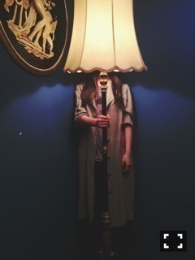
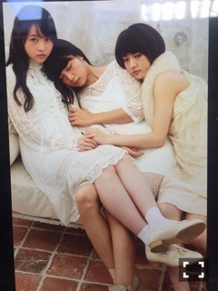

しゅたーーー！
コンニチワー
ライブがもう来週なのか！
楽しみだなー*･゜ﾟ･*:.｡..｡.:*･'(*ﾟ▽ﾟ*)'･*:.｡. .｡.:*･゜ﾟ･*
リハで、カメラが入ることを
すっかり忘れてて急遽
まいまいと美彩に
化粧品をお借りしたりしてました。
このふたりの安心感たらなんだろうか
来年が近づいているのね。
今、部屋が物置状態、きたない、
片付けなきゃいけない。
ずーーっと使ってるチークが
一向に減らない、怖い。
本格的なブルーチーズを
買ったものの使い方に困る。
毎日、夜、今日の行動の反省を
ひとりでしている。
あれ、まずかったかな、、
もう少しああ言えばよかったな、
とか
映画借りて夜中まで観てる。
買い物中に
今本当に買い物してるのか
ここにいるのか
わからなくなるという
変な感覚に陥った。
突然の近況報告。
こんな感じ！
暗い！！！！！
お仕事は充実している。

12月18日 「乃木坂46物語」
12月19日 PF vol.2
12月20日 melantrick photo book 【mirror】
12月23日 MUSIC VIDEO集「ALL MV COLLECTION〜あの時の彼女たち〜」
12月25日 FLASHスペシャル
12月29日 BUBKA
悲しみの忘れ方MV
とても可愛いヘッドアクセ
失いたくないからを
大人バージョンにしたみたい。
失いたくないからのMV
みんな綺麗ですごく羨ましく
思いながら見てたのを思い出した。
本編お楽しみに！
あらロマMVの公開も近いのかな？

まりか